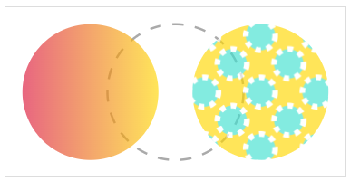

Управлять прозрачностью заливки можно с помощью свойства fill-opacity. Прозрачность также можно задавать как атрибутом, так и через CSS.
Значение задаётся числом от 0 до 1, например:
<rect width="150" height="100" fill="gold" fill-opacity="0.5"></rect>
rect {
fill: gold;
fill-opacity: 0.5;
}
Прозрачность работает для всех видов заливок, в том числе для градиентов и паттернов:
Задайте первой фигуре прозрачность с помощью атрибутаfill-opacity="0.5"
.
Задайте третьей фигуре прозрачность с помощью CSS fill-opacity: 0.75.
<svg width="300" height="150">
<circle r="60" cx="75" cy="50%" fill="#ff7700></circle>
<circle r="60" cx="150" cy="50%" fill="hsla(50, 100%, 50%, 0.5)></circle>
<circle class="shape-opacity" r="60" cx="225" cy="50%"></circle>
</svg>
svg { border: 1px solid #dddddd; }
.shape-opacity{ fill: yellowgreen; }
<svg width="300" height="150">
<circle r="60" cx="75" cy="50%" fill="#ff7700" fill-opacity="0.5></circle>
<circle r="60" cx="150" cy="50%" fill="hsla(50, 100%, 50%, 0.5)"></circle>
<circle class="shape-opacity1" r="60" cx="225" cy="50%"></circle>
</svg>